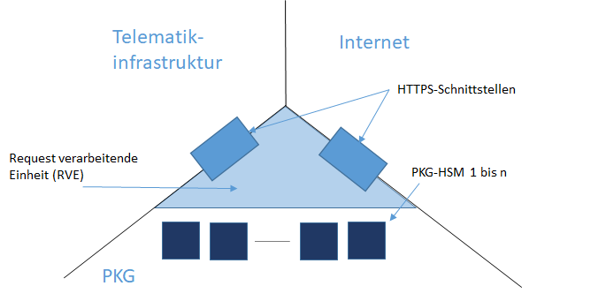
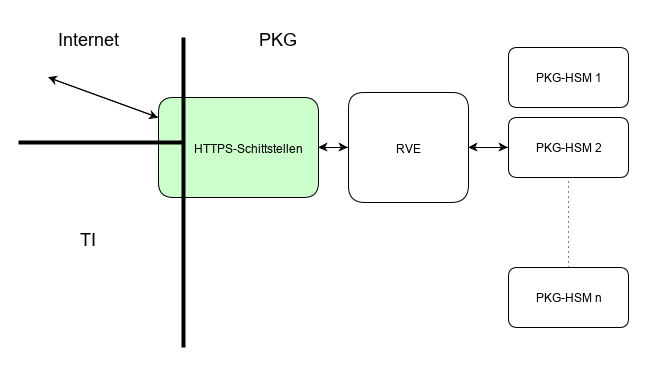

Die Spezifikation gemSpec_PKG und die Steckbriefe gemProdT_PKG / gemAnbT_PKG werden (noch) nicht produktiv verwendet!
Elektronische Gesundheitskarte und Telematikinfrastruktur
Spezifikation
Private Key Generator
| Version | 0.0.0 |
| Revision | 571409 |
| Stand | 28.02.2020 |
| Status | in Bearbeitung |
| Klassifizierung | nicht öffentlich |
| Referenzierung | gemSpec_PKG |
Änderungen zur Vorversion
Es handelt sich um die Erstversion des Dokumentes.
Dokumentenhistorie
| Version |
Stand |
Kap./ Seite |
Grund der Änderung, besondere Hinweise |
Bearbeitung |
|---|---|---|---|---|
Die vorliegende Spezifikation definiert Anforderungen an den Produkttyp "Private Key Generator" (PKG) und beschreibt die Funktionsweise der identitätsbasierten (asymmetrischen) Verschlüsselung und der Hashwertbestätigung (Fernsignatur) innerhalb der TI.
Das Dokument richtet sich an Hersteller und Anbieter des Produkts Private Key Generator" (PKG)". Weiterhin unterstützt das Dokument Anwendungen der TI, die eine identitätsbasierten Verschlüsselung und/oder die Hashwertbestätigung verwenden möchten, indem hier ebenfalls Client-spezifische Abläufe normativ beschrieben werden. Auf diese kann eine Anwendungsspezifikation verweisen.
Dieses Dokument enthält normative Festlegungen zur Telematikinfrastruktur des deutschen Gesundheitswesens. Der Gültigkeitszeitraum der vorliegenden Version und deren Anwendung in Zulassungsverfahren wird durch die gematik GmbH in gesonderten Dokumenten (z. B. Dokumentenlandkarte, Produkttypsteckbrief, Leistungsbeschreibung) festgelegt und bekannt gegeben.
Schutzrechts-/Patentrechtshinweis
Die nachfolgende Spezifikation ist von der gematik allein unter technischen Gesichtspunkten erstellt worden. Im Einzelfall kann nicht ausgeschlossen werden, dass die Implementierung der Spezifikation in technische Schutzrechte Dritter eingreift. Es ist allein Sache des Anbieters oder Herstellers, durch geeignete Maßnahmen dafür Sorge zu tragen, dass von ihm aufgrund der Spezifikation angebotene Produkte und/oder Leistungen nicht gegen Schutzrechte Dritter verstoßen und sich ggf. die erforderlichen Erlaubnisse/Lizenzen von den betroffenen Schutzrechtsinhabern einzuholen. Die gematik GmbH übernimmt insofern keinerlei Gewährleistungen.
Es ist keine Abgrenzung gegenüber anderen Spezifikationen/Konzepten oder im Kontext derzeit nicht relevanten Themen erforderlich.
Anforderungen als Ausdruck normativer Festlegungen werden durch eine eindeutige ID in eckigen Klammern sowie die dem RFC 2119 [RFC2119] entsprechenden, in Großbuchstaben geschriebenen deutschen Schlüsselworte MUSS, DARF NICHT, SOLL, SOLL NICHT, KANN gekennzeichnet.
Sie werden im Dokument wie folgt dargestellt:
<AFO-ID> - <Titel der Afo>
Text / Beschreibung
[<=]
Dabei umfasst die Anforderung sämtliche zwischen Afo-ID und der Textmarke [<=] angeführten Inhalte.
Auf Endgeräten, die eine sichere Identifikation des Nutzers zulassen, aber keine sicheren Schlüsselspeicher für private Schlüssel der Nutzer aus dem TI-Vertrauensraum zur Verfügung stellen, möchte man
Solche Endgeräte können bspw. mobile Endgeräte mit einem Trusted-Plattform-Modul (TPM), so wie sie im Optimos-Projekt [xxx] genutzt werden, sein.
Diese Möglichkeiten sind anwendungsunabhängig und werden als erstes bei mobilen Szenarien ab KIM 2.0 verwendet.
Bei einem klassischen asymmetrischen Verschlüsselungsverfahren gibt es einen Empfänger, der ein asymmetrisches Schlüsselpaar besitzt: einen öffentlichen und einen privaten Schlüssel. Weiterhin gibt es einen Sender, der den öffentlichen Schlüssel des Empfängers authentisch und integer vorliegen hat. Mithilfe des öffentlichen Schlüssels des Empfängers kann der Sender eine Nachricht für den Empfänger verschlüsseln. Nur der Empfänger kann die Nachricht entschlüsseln, da nur er den privaten Schlüssel kennt.
Bei einem Identitätsbasierten Verschlüsselungsverfahren (IBE) gibt es einen dritten Akteur -- den Private Key Generator (PKG). Er stellt regelmäßig (bspw. jährlich) neue Public-Parameter (PP) als systemweit veröffentlichte Daten zur Verfügung, die Grundlage des IBE sind. Ein Sender kann mit Hilfe der PP und einem eindeutigen Identifikators des Nutzers (bspw. KVNR, Telematik-ID, E-Mail-Adresse, LDAP-URI etc.) einen Nachricht für den Nutzer asymmetrisch verschlüsseln. Der Identifikator ist damit der öffentliche Schlüssel des Empfängers. Damit ein Empfänger lokal eine Nachricht entschlüsseln kann
Um eine Nachricht
xxx
Der Private Key Generator (PKG) ist ein Dienst der TI-Plattform, der von beliebigen Anwendungen der TI verwendet werden kann. Er ist Teil eines identitätsbasierten, asymmetrischen Verschlüsselungsverfahrens (Identity Based Encryption (IBE)). Bei einem IBE kann ein Sender aus systemweit bekannten öffentlichen Parametern (Public Parameter) und einem eindeutigen Identifikationsmerkmal (bspw. einer KVNR, einer Telematik-ID, einer E-Mail-Adresse etc.) einen öffentlichen Schlüssel berechnen. Mittels dieses öffentlichen Schlüssels kann der Sender eine Nachricht (ein Dokument etc.) für den Empfänger, dem dieses Identifikationsmerkmal zugeordnet ist, asymmetrisch verschlüsseln. Für diese Verschlüsselung ist keine direkte Interaktion mit dem PKG notwendig, d. h. die Verschlüsselung wird vollständig lokal beim Sender durchgeführt.
Im Abschnitt werden Beispiele zur asymmetrischen identitätsbasierten Verschlüsselung detailliert aufgeführt um das Verständnis zu erleichtern.
Als erste Anwendungen in der TI wird die Anwendung KIM ein identitätsbasiertes, asymmetrisches Verschlüsselungsverfahren teilweise verwenden.
Der PKG hat zwei Aufgaben:
Die Public-Parameter (ca. 800 Byte) werden über die TSL übertragen und durch die TSL authentizitäts- und integritätsgeschützt. Der Schutz der Public-Parameter auf diese beiden Schutzziele ist von zentraler Bedeutung. Für Systeme die keine TSL verwenden, bietet der PKG die Möglichkeit die aktuell gültigen Public-Parameter vom PKG zu erfragen.
Der PKG bietet zwei HTTPS-Schnittstellen an -- eine im Internet und eine in der TI.
Das Standard-Vorgehen bei IBE-Verfahren ist, bei der Berechnung des öffentlichen Schlüssels ebenfalls Anwendungszweck (Anwendung) und Zeitinformationen und ggf. andere Angaben mit einfließen zu lassen. Auf diese Weise erfolgt zum einem eine Schlüsseldiversifizierung -- für unterschiedliche Anwendungszwecke und Anwendungen werden unterschiedliche Schlüssel verwendet. Andererseits wird es aufgrund des Zeitbezugs möglich, die Schlüsselnutzung zeitlich zu begrenzen.
Zur Berechnung des öffentlichen Schlüssels eines Empfängers wird für die TI eine Zeichenkette vom Sender der folgenden Form verwendet:
<ID-Public-Parameter>:<Anwendung>:<Operation>:<Typ-des-Identifikationsmerkmals>:<Identifikationsmerkmal>:<Datum>
Beispiele:
Solch eine Zeichenkette wird im folgenden als erweiterte Identifikationszeichenkette bezeichnet. Sie wird im Klartext an jedes mit ihrer Hilfe erzeugte Chiffrat beigefügt. Sie ist (1) empfängerspezifisch (Ende-zu-Ende-Verschlüsselung), (2) anwendungsspezifisch, (3) operationsspezifisch, und (4) tagesspezifisch.
Bei der Verwendung von IBE-Verfahren in der TI muss für die Verschlüsselung kein direkter Kontakt mit dem PKG. Die Verschlüsselung kann rein lokal erfolgen, falls die gültigen Public-Parameter im System vorliegen, was bei Komponenten und Diensten der TI im Regelfall gegeben ist.
Der Empfänger kann sich täglich (bspw. LEI) oder beliebig oft (bspw. FdV) einen privaten Schlüssel vom PKG berechnen lassen und vom PKG erhalten. Dieser wird über einen Ende-zu-Ende verschlüsselten Kanal zwischen Client und PKG übermittelt. Die privaten Schlüssel korrespondieren immer genau mit einer erweiterten Identifikationszeichenkette. Als Beispiel bei der Anwendung eRezept wird i. d. R. ein Apothekensystem genau ein mal den privaten Schlüssel für "PP1:eR:eR:TID:2-20a1201-001:2020-04-10" für die Entschlüsselung aller eRezepte, die für die Apotheke am 10.04.2020 verschlüsselt wurden, vom PKG berechnen lassen. Anschließend verbleibt der Schlüssel lokal im Apothekensystem.
Der PKG muss die meisten der durch Doppelpunkt (":") getrennten Bestandteile in der erweiterten Identifikationszeichenkette nicht auswerten oder verstehen. Er muss nur wissen, dass das Identifikationsmerkmal (KVNR etc.) vor dem Datum am Ende erscheint. Der PKG ist also anwendungsunabhängig. Der PKG muss bei einer Authentisierung des Nutzers über einen Token die Gleichheit der Identitätsattribute (KVNR, Telematik-ID, E-Mail-Adresse etc.) im Token und in der erweiterten Identifikationszeichenkette des öffentlichen Schlüssels überprüfen. Wenn dann zusätzlich die Datumsinformationen nicht zu alt sind (oder gar in der Zukunft liegen) kann der PKG den zur erweiterten Identifikationszeichenkette passenden privaten Schlüssel für den Nutzer berechnen und ihn sicher an den Nutzer übermitteln. Die Berechnung erfolgt dabei innerhalb eines speziellen PKG-HSM, das durch technische Maßnahmen verhindert, dass der Betreiber unberechtigte Schlüsselberechnungen vornehmen kann.
Die folgende Abbildung gibt eine Übersicht über den grundsätzlichen Aufbau eines PKG:

Abbildung 1: Strukturübersicht PKG
Die beteiligten Akteure sind:
Tabelle 1: beteiligte Akteure im Kontext IBE
| Rolle | Beschreibung |
|---|---|
| Verschlüsselnder (Sender) | Ein Sender möchte eine beliebige Nachricht (ein Dokument etc.) asymmetrisch für einen Empfänger verschlüsseln. Der Sender benötigt (1) die aktuellen integeren Public-Parameter (i. d. R. aus der TSL) und (2) ein eindeutiges Identifikationsmerkmal des Empfängers (KVNR, Telematik-ID etc.). Der Sender benötigt keine direkte Interaktion mit dem PKG. |
| Entschlüsselnder (Empfänger) | Der Empfänger erhält eine vom Sender für ihn asymmetrisch verschlüsselte Nachricht (Chiffrat). Beim Chiffrat ist im Klartext beigefügt welchen erweiterte Identifikationszeichenkette als Basis für die Berechnung des öffentlichen Schlüssels vom Sender verwendet wurde. Diese präsentiert der Empfänger dem PKG. Nach erfolgreicher Authentifizierung und Überprüfung der Berechtigung durch ein PKG-HSM berechnet das PKG-HSM den zum öffentlichen Schlüssel passenden privaten Schlüssel. Dieser private Schlüssel wird dem Empfänger über einen sicheren übergeben. Der Empfänger kann lokal die Nachricht des Senders entschlüsseln. Je nach Client (vgl. Tabelle 2) kann der Empfänger den privaten Schlüssel länger lokal speichern und kann diesen für die Entschlüsselung von weiteren Chiffraten verwenden. |
| Hashwertbestätigung Anfordernder |
Ein Nutzer kann sich gegenüber dem PKG authentisieren und dem PKG einen Hashwert übergeben. Der PKG stellt eine Bestätigende Signatur über das Tupel (Identität Signierender, Datum, Hashwert) und übergibt das Tupel und die Signatur dem Aufrufer. |
| Signatur Prüfender | Ein Empfänger erhält Daten (eine KIM-Nachricht, ein Dokument etc.), das Tupel (Identität Signierender, Datum, Hashwert) plus Signatur. Er prüft die Signatur über das Tupel und kann sich sicher sein, dass de im Tupel aufgeführte Identität die Daten mit dem Hashwert "Hashwert" authentisieren (signieren) wollte. |
| Anbieter des PKG | Der Anbieter des PKG wird von der gematik beauftragt als Dienst der TI einen PKG zur Verfügung zu stellen. Die PKG-HSM innerhalb des PKG berechnen jährlich neue Public-Parameter und auf Anfrage private Schlüssel für authentifizierte Nutzer (Empfänger). |
Die beteiligten Komponenten und Dienste sind:
Tabelle 2: beteiligte Komponenten und Dienste im Kontext IBE
| Komponente oder Dienst | fachliche Aufgabe |
|---|---|
| Client | Der Client ver- und entschlüsselt Nachrichten, die mittels der IBE gesichert werden. Ebenfalls kann er Hashwertbestätigungen (Fernsignatur) anfordern oder prüfen. Bspw. ein Client-Modul bei KIM 2.0 ist ein Client in diesem Sinne. |
| PKG | Der PKG erzeugt zum einen jährlich neue Public-Parameter und zu anderen berechnet er für Empfänger deren private Schlüssel. Nach sicherer Authentifizierung und Prüfung der Berechtigung für diese Berechnung werden die privaten Schlüssel über eine Ende-zu-Ende gesicherten Datenkanal an den Empfänger übermittelt. Auf Anfrage stellt der PKG auch einen Client die aktuellen Public-Parameter signiert zur Verfügung. |
| TSL-Dienst | Der TSL-Dienst TI transportiert die Public-Parameter, der PKG jährlich neu erzeugt, authentizitäts- und integritätsgeschützt. |
Ein Schlüsselgenerierungsdienst (SGD) berechnet für Anfragende symmetrische Schlüssel nach bestimmten Schlüssel-Ableitungsregeln, nachdem der Anfragende vom SGD-HSM erfolgreich authentifiziert wurde. Über einen beidseitig authentisierten und Ende-zu-Ende-verschlüsselten Datenkanal übergibt ein SGD-HSM die berechneten Schlüssel dem Anfragenden. Grundsätzlich ist ein SGD anwendungsunabhängig, er wird aktuell in der TI genau nur für die Anwendung elektronische Patientenakte (ePA) verwendet.
Der PKG stellt, abstrahiert gesehen, die Weiterentwicklung des SGD in Bezug auf die Berechnung von asymmetrischen Schlüsseln dar. Daher ist die Architektur von PKG und SGD sehr ähnlich. Da jedoch zukünftig innerhalb der TI verstärkt die tokenbasierte Authentisierung und nicht mehr vorrangig die Authentisierung über Authentisierungszertifikate verwendet werden soll, gibt es im Bereich der Authentifizierung und der authentisierten Ende-zu-Ende-Verschlüsselung zwischen PKG und SGD deutliche Unterschiede. Da ein Anfragender keine Authentisierungszertifikate bei Anfragen an ein PKG verwendet, sondern JSON Web Token (JWT) ohne nutzerspezifische kryptographische Schlüssel, kann das beim SGD verwendete Kommunikationsprotokoll für die Ende-zu-Ende-Verschlüsselung nicht verwendet werden. Daher verwendet der PKG ein anderes Kommunikationsprotokoll auf Applikationsebene und stellt damit auch andere durch einen Anfragenden aufzurufende Operationen bereit. Ebenfalls unterscheidet sich die JWT-Prüfung beim PKG deutlich von der Prüfung der Authentisierungszertifikate beim SGD.
Die folgende Tabelle gibt eine kurze Übersicht über die von einem PKG auf dessen HTTPS-Schnittstellen (vgl. Abschnitt ) angebotenen Operationen.
Tabelle 3: Übersicht über die von außen zugänglichen Operationen eines PKG
| URL | Beschreibung |
|---|---|
| /PublicParameter | Clients, die nicht die TSL verwenden (nicht der Regelfall), können hier die aktuell systemweit zu verwendenden Public-Parameter des IBE-Verfahrens in der TI vom PKG erfragen. |
| /PrivateKey | Ein Client fordert die Berechnung des privaten Schlüssel für die von ihm präsentierte erweiterten Identifikationszeichenkette an. Der Request ist für alle PKG-HSM innerhalb des PKG verschlüsselt. Im verschlüsselten Request befindet sich das Authentisierungstoken (JWT) des vom Client repräsentierten Nutzers. Die Verschlüsselung ist Ende-zu-Ende. |
| /HashACK | xxx |
| /Random | Ein Client kann für ihn verschlüsselten Zufall von hoher kryptographischer Güte vom PKG anfordern. Diesen Zufall kann der Client parallel neben Zufall aus anderen Quellen für die Erweiterung seines lokalen Entropie-Speichers verwenden. |
| /Time | Ein Client kann die aktuelle Zeit (bspw. "2020-04-28T05:42:47.248131+00:00") im PKG (RVE) vom PKG erfragen (vgl. Abschnitt ). |
Die gematik stellt analog zum AKTOR-SGD eine Beispielimplementierung bereit und Beispielimplementierungen für Clients in verschiedenen Programmiersprachen (IBE-Verschlüsselung, IBE-Entschlüsselung, Hashwertbestätigung anfordern (Fernsignatur), Bestätigungssignatur prüfen).
Verfügbarkeits- und Performanzanforderungen für einen PKG befinden sich in [gemSpec_Perf#PKG] und sind dem Produkttypsteckbrief PKG zugewiesen.
Ähnlich wie einem TSP werden an den Betreiber eines PKG Anforderungen u. a. an die sichere Betreiberumgebung aus [gemSpec_DS_Anbieter] gestellt (vgl. Zuordnung im Anbietersteckbrief). Die zugeordneten Module sind "Basis-IS", "Basis-ISMS", "Erweitertes ISMS", "TI-Sicherheitsbericht" und "„Erweiterter TI-Sicherheitsbericht“.
A_19529
Der Anbieter eines PKG MUSS die im Handbuch des eingesetzten PKG-Dienstes beschriebenen Voraussetzungen für den sicheren Betrieb des Produktes gewährleisten. <=
A_19530
Der Hersteller eines PKG MUSS für sein Produkt im dazugehörigen Handbuch leicht ersichtlich darstellen, welche Voraussetzungen vom Betreiber und der Betriebsumgebung erfüllt werden müssen, damit ein sicherer Betrieb des Produktes gewährleistet werden kann. <=
A_19527
Ein PKG MUSS mit den Stratum-1-NTP-Servern der TI synchronisieren. <=
A_19528
Ein PKG MUSS sicherstellen, dass dessen PKG-HSM keine automatische Verbindung zu Zeitserver aufbauen. <=
Ein PKG besteht aus

Abbildung 2: Bestandteile eines PKG
Vorgaben für die HTTPS-Schnittstellen befinden sich in Abschnitt . Vorgaben für das dabei zu verwendeten TLS-Protokoll finden sich in [gemSpec_Krypt] und werden über die Referenzierung im Produkttypsteckbrief PKG normativ.
Eingehende Requests eines Clients werden von der Request verarbeitenden Einheit (RVE) an der HTTPS-Außenschnittstelle entgegengenommen. Dort werden sie entweder direkt beantwortet (Operation PublicParameter und Time) oder aufbereitet und danach an ein PKG-HSM (Operation PrivateKey und Random) gesendet. Abhängig von der Antwort des PKG-HSM erzeugt die RVE eine Antwort für den Client und sendet diese an ihn. Die RVE hat keinen Einblick in den beidseitig authentisierten und verschlüsselten Datenkanal zwischen Client und PKG-HSM (vgl. Abschnitt xxx). Die RVE stellt nur in Bezug auf die Verfügbarkeit (DoS-Gegenmaßnahmen, Umkodieren von Requests etc.) des PKG eine kritische Komponente dar. In Bezug auf die Vertraulichkeit der Schlüssel erbringt sie keine Sicherheitsleistung.
Die Schnittstelle zwischen RVE und PKG-HSM ist eine Innenschnittstelle (vgl. Abschnitt ) und wird deshalb nicht ausspezifiziert beschrieben.
A_19648
Die Request verarbeitende Einheit (RVE) eines PKG MUSS die über die HTTPS-Schnittstellen ankommende HTTP-Request entgegennehmen. Sie MUSS die Operation PublicParameter selbst beantworten (vgl. ). Sie MUSS die restlichen Operationen über an eine Lastverteilung an die im PKG zur Verfügung stehenden PKG-HSM verteilten (Innenschnittstelle). Die Antwort der PKG-HSM auf die Requests MUSS die RVE (ggf. nach geeigneter Umkodierung abhängig von der Gestaltung der Innenschnittstelle) als Antwort auf den Request über die entsprechende Webschnittstelle an den Client liefern. <=
Auf OSI-Schichten unterhalb der Applikationsschicht gibt es mit A_19634 Maßnahmen für den DoS-Schutz.
Ziel der DoS-Schutzmaßnahmen in der RVE und im PKG-HSM (also auf Applikationsebene des PKG) ist es die rechentechnisch teuren Operationen PrivateKey und Random zu schützen, die Zugriff auf die PKG-HSM erfordern. Um diese rechentechnisch beschränkte Ressource zu schützen wird sie an eine für einen potentiellen Angreifer beschränkte Ressource gebunden -- die Anzahl der gültigen Authentisierungstoken, auf die er Zugriff hat. Ein PKG-HSM gibt der RVE nach erfolgreichen Kommandoausführung (inkl. Verifikation des Authentisierungstokens des Aufrufers) ein sich regelmäßig wechselndes Pseudonym des Aufrufenden zurück -- "Pre-Nutzer-ID" genannt (vgl. A_20122). Die RVE kann also den Anfragenden nicht direkt identifizieren, sondern erfährt vom PKG-HSM nur (wechselnde) Pseudonyme der Nutzer.
Das Pseudonym Pre-Nutzer-ID bildet die Grundlage der Berechnung der "user_id" (vgl. A_19663). Aufgrund der Bildungsvorschrift der user_id kann eine RVE erkennen, ob ein Client es gültiges Pseudonym sendet, erst dadurch wird die Beschränkung der Anfragen nutzerspezifisch möglich.
Anhand dieses Pseudonyms (user_id) kann die RVE beim nächsten Aufruf den Nutzer erkennen und ggf. zu viele Anfragen von ihm drosseln. Dafür wird der Nutzer aufgrund des Interface-Designs aufgefordert seine user_id bei Anfragen mit zusenden. Nutzer sind motiviert dies auch zu tun, weil Anfragen ohne gültige user_id bei hohem Lastaufkommen deutlich herunter priorisiert werden (A_19633).
A_19663
Die RVE MUSS initial einen AES 128 Bit Authentisierungsschlüssel (genannt Key_RVE_UID) für die CMAC-Berechnung bei der Erzeugung der user_id zufällig erzeugen. Die RVE MUSS diesen Schlüssel alle x Tage zufällig neu erzeugen. Die Zeitdauer x MUSS per Konfiguration vom Administrator konfigurierbar sein. Der Default-Wert für x MUSS 40 Tage betragen. <=
Der Schutzbedarf von Key_RVE_A ist (nur) mittel, d. h. der Schlüssel soll per Software in der RVE vorhanden sein (keine HSM-Speicherung).
A_19664
Die RVE MUSS bei erfolgreicher Abarbeitung des Requests in PKG-HSM die Pre-Nutzer-ID (vgl. A_20122) entgegennehmen. Anschließend mittels Key_RVE_UID und dem CMAC-Verfahren [NIST-SP-800-38B] den 128 Bit Längen AES-CMAC von Pre-Nutzer-ID (diese einfach als Byte-Array vom PKG-HSM entgegennehmen und dies als Eingabe für den CMAC-Algorithmus nutzen) berechnen.
Dieser AES-CMAC MUSS hexadezimal kodiert werden -- es wir damit also eine 32 Byte lange Zeichenkette erzeugt, diese wird mit CM bezeichnet.
Die user_id MUSS gleich die Zeichenkette "<Pre-Nutzer-ID>" + ":" + "<CM>" sein. <=
Diese so erzeugte user_id wird die PKG bei den Operationen PrivateKey und Random innerhalb der Antwort auf den Nutzer-Request mitsenden (vgl. A_xxx und A_xxxx).
Den wesentlichen Teil der Sicherheitsleistung eines PKG erbringt das (bzw. die) PKG-HSM. Das PKG-HSM entscheidet, ob eine ausreichende Authentifizierung stattgefunden hat und führt erst danach eine Berechnung eines privaten Schlüssels für einen Client durch.
A_19656
Ein PKG MUSS Folgendes sicherstellen:
Hinweis zu Punkt 7:
Analog zu den CC-Evaluierungen der TI-Komponenten muss es möglich sein, ohne dass Verschwiegenheitsregelungen die Klärung von fachlichen Punkten während der Sicherheitsbegutachtung behindern, die notwendige Dauer der Sicherheitsbegutachtung zu minimieren.
In einem PKG müssen verschiedene Schlüssel verfügbar sein, die durch ein PKG-HSM geschützt werden müssen.
A_19652
Ein PKG MUSS sicherstellen, dass in seinem (oder seinen) PKG-HSM folgende Schlüssel existieren und durch das (die) PKG-HSM geschützt werden:
A_19653
Ein PKG MUSS sicherstellen, dass die Schlüssel (S4) nur im Mehr-Augen-Prinzip erstellbar und änderbar sind.
Bei der Erstelllungsschlüsselzeremonie wird dem PKG-HSM eine Identifikator (PP-ID) für die dabei erzeugten Public-Parameter vorgegeben. Diese PP-ID MUSS den Public-Parameter zugehörig im PKG-HSM gespeichert werden. Das PKG-HSM MUSS PP-ID, die einen Doppelpunkt enthalten, ablehnen. <=
A_20120
Ein PKG-HSM MUSS bei der Erzeugung der Masterkeys und der Public-Parameter sicherstellen, dass die gewählten Parameter (q, p, s) etc. (vgl. [RFC-5091#9 Security Considerations], [NK-2005]) ein Sicherheitsniveau von 120 Bit ermöglichen. <=
Erläuterung: A_20120 besagt, dass q mindestens 256 Bit groß ist.
A_19667
Das PKG-HSM MUSS es ermöglichen mehrere (Public-Parameter, Maskerkeys, PP-ID)-Tupel im PKG-HSM zu speichern und verwenden zu können. <=
A_19654
Ein PKG MUSS sicherstellen, dass die Schlüssel (S2) Teil des PKG-HSM-Firmware-Moduls sind. <=
A_19655
Ein PKG MUSS technisch sicherstellen, dass
A_19658
Ein PKG MUSS technisch sicherstellen, dass alle Schlüssel S4 und der private Schlüssel S1 in dessen PKG-HSM ausschließlich verschlüsselt und im Mehr-Augen-Prinzip importierbar und exportierbar sind (Ziel: Sicherstellung der Verfügbarkeit dieser Schlüssel). Der PKG MUSS technisch sicherstellen, dass beim Import und Export dieser Schlüssel notwendiger Weise ein Mitarbeiter der gematik beteiligt ist.
<=
A_19659
Ein PKG MUSS durch technische Maßnahmen sicherstellen, dass
Verständnishinweis zu und : Dies ist analog zu den Vorgaben, wie seit 2014 die CVC-Root der TI betrieben wird und so wie es auch bei den SGD umgesetzt wird. Damit wird der Betreiber eines PKG vom Verdacht befreit, er könnte die Masterkeys des IBE-Verfahrens (S4) missbrauchen. Er ist technisch aufgrund der zwei Anforderungen nicht in der Lage dies zu tun.
A_20123
Ein PKG-HSM MUSS sicherstellen, dass
(1) der Pseudonymisierungs (S5) ein Schlüssel mit mindestens 120 Bit Entropie ist,
(2) der Schlüssel alle y Tage vom PKG-HSM gewechselt wird.
(3) Der Wert y MUSS konfigurierbar im Bereich von einem Tag bis zu 30 Tagen liegen.
(4) Der Default-Wert MUSS 4 Tage betragen. <=
A_20125
Ein PKG MUSS sicherstellen, dass er für den öffentlichen Schlüssel (S1) ein bestätigendes X.509-Signaturzertifikat aus der Komponenten-PKI mit der OID "oid_pkg_hsm" erhält.
Ein PKG MUSS dieses Zertifikat als Signaturzertifikat bei der Signatur der Public-Parameter im Kontext der Operation PublicParameter verwenden. <=
A_19662
Der PKG MUSS wöchentlich überprüfen, ob neue X.509-Root-CA-Versionen existieren und entsprechende Cross-Zertifikate verfügbar sind. Falls dies der Fall ist, so MUSS der PKG diese neue Root-Versionen in seine PKG-HSMs importieren.
<=
Hinweis: Nach der Erzeugung einer neuen Root-Version der X.509-Root-CA der TI werden dessen selbstsigniertes Zertifikat und Crosszertifikate auf den Download-Punkt https://download.tsl.ti-dienste.de/ abgelegt. Automatisiert kann der PKG von dort die Verfügbarkeit neuer Versionen überwachen. Im Regelfall wird alle zwei Jahre eine neue Root-Version erzeugt.
A_19670
Der PKG MUSS täglich die TSL der TI beziehen (vgl. Download-Punkte des TSL-Dienstes, bspw. https://download.tsl.ti-dienste.de/TSL.sha2 und https://download.tsl.ti-dienste.de/TSL.xml).
Sollten sich IdP-Zertifikate in der TSL befinden, die noch nicht in den PKG-HSM in der Liste der Prüfschlüsseln (S3) enthalten sind, so MUSS der PKG diese in die PKG-HSM importieren (vgl. A_xxx, Prüfung der Zertifikate im PKG-HSM über die Root-Schlüssel (S2)).
Sollte IdP-Zertifikate nicht mehr in der TSL aufgeführt sein, so MUSS der PKG für diese Zertifikate Sperrinformationen vom OCSP-Responder der X.509-Root der TI beziehen und diese den PKG-HSM zur Prüfung übergeben.
Die PKG-HSM MÜSSEN bei erfolgreicher Prüfung dieser Sperrinformationen (inkl. OCSP-Responder-Zertifikat des OCSP-Responder der X.509-Root der TI) die gesperrten IdP-Zertifikate aus der Liste (S3) entfernen und dauerhaft die Sperrung im PKG-HSM speichern (ein erneutes Importieren eines gesperrten IdP-Zertifikat darf nicht mehr möglich sein). <=
In diesem Abschnitt wird die Ablauflogik im speziellen HSM-Firmware-Modul beschrieben. Diese Vorgaben sind ein wichtiger Bestandteil der für die Zulassung notwendigen Sicherheitsüberprüfung (vgl. ).
A_20118
Ein PKG-HSM MUSS beim Import eines IdP-Zertifikat (Aufnahme zur Liste (S3), vgl. A_19652) prüfen, ob
(1) das IdP-Zertifikat per Signaturprüfung auf einen Root-Schlüssel aus (S2) rückführbar ist, und
(2) ob es eine OCSP-Response (mit Status "good") für dieses IdP-Zertifikat gibt, die per Signaturprüfung auf einen Root-Schlüssel aus (S2) rückführbar ist und die nicht älter als 24 Stunden ist.
Liefert eine dieser Prüfung ein nicht-positives Ergebnis, so MUSS das PKG-HSM den IdP-Schlüsselimport ablehnen.
Anderenfalls (Gut-Fall) MUSS das PKG-HSM das IdP-Zertifikat importieren und seiner Liste (S3) hinzufügen. <=
A_20119
Die RVE MUSS das PKG-HSM beim IdP-Zertifikats-Import unterstützen, indem es dem PKG-HSM
(1) empfiehlt welchen Schlüssel aus (S2) es für die Prüfungen aus A_20118 verwenden muss, und
(2) sie ihm alle notwendigen Zertifikate (OCSP-Signer-Zertifikate) beim Import zur Verfügung stellt. <=
A_20121
Ein PKG-HSM MUSS im Rahmen der Operationen PrivateKey und Random das übergeben Authentisierungstoken (JSON Web Token) prüfen, auf folgende Prüfkriterien:
(1) ist das JWT zeitlich gültig,
(2) ist im 'aud'-Feld die URL eines der Webschnittstellen der PKG aufgeführt,
(3) ist die Signatur per Signaturprüfung auf einen IdP-Schlüssel aus der Liste (S3) rückführbar.
Falls eine der Prüfungen ein nicht-positives Ergebnis (d. h. != OK) ergab, so MUSS der PKG-HSM die Kommandoarbeitung mit einer entsprechenden Fehlermeldung an das RVE (Inneninterface) abbrechen. <=
A_20122
Ein PKG-HSM MUSS, wenn die JWT-Prüfung erfolgreich verlief, die Pre-Nutzer-ID erzeugen indem es den SHA-256-Hashwert der Konketation des Schlüssel (S5) mit dem 'aud'-Feld aus dem JWT berechnet. Der erzeugte 256-Bit lange Hashwert MUSS hexadezimal kodiert werden (und ist damit 64 Zeichen/Byte lang). Dieser so erzeugte Wert sei die Pre-Nutzer-ID.
Die Pre-Nutzer-ID MUSS bei der Antwort des PKG-HSM (im Rahmen der Kommandoabarbeitung -- ob erfolgreich oder nicht) an die RVE der RVE mitgeteilt werden. <=
A_20126
Ein PKG-HSM MUSS bei der Bearbeitung der Operation PrivateKey prüfen, ob der vom Nutzer präsentierte erweiterte Identifikation (sozusagen der vom Sender verwendete öffentliche Schlüssel) zum 'sub'-Feld im vom Nutzer präsentierten JWT passt.
Das PKG-HSM MUSS dafür prüfen, ob Datenfeld 4 und 5 gemäß A_20124 gleich dem 'sub'-Feld des JWT sind.
Falls nein, so MUSS das PKG-HSM die Berechnung des zum öffentlichen Schlüssel passenden privaten Schlüssel ablehnen und der RVE eine entsprechende Fehlermeldung übergeben (Innenschnittstelle).
Falls ja MUSS das PKG-HSM den entsprechenden privaten Schlüssel für den Nutzer berechnen.
Falls es keinen zur Public-Parameter-ID passenden Masterkey kennt, so MUSS das PKG-HSM dies der RVE als Fehlermeldung zurückmelden und MUSS abbrechen. <=
Die Operationen PrivateKey und Random enthalten im Request einen vom Client für die PKG-HSM über ein IBE-Verfahren (vgl. [gemSpec_Krypt#]) verschlüsselte Kommandozeichenkette. Als Identifikationszeichenkette für den dabei verwendeten öffentlichen Schlüssel verwendet der Client die Zeichenkette "PKG:YYYY-MM-DD" (vgl. und xxx).
A_19666
Ein PKG-HSM MUSS von der RVE die "cipher_text" der Clients aus den Operationen PrivateKey und Random entgegen nehmen.
Das PKG-HSM MUSS versuchen die Zeichenkette gemäß [gemSpec_Krypt#] mittels des für das Chiffrat zugehörigen Masterkeys (vgl. Kodierung gemäß xxx und PP-ID), der sich als privater Schlüssel im PKG-HSM befindet, zu entschlüsseln.
Falls dies fehlschlägt MUSS das PKG-HSM die mit einer entsprechender Fehlermeldung an die RVE meldet (Innenschnittstelle) und die Kommandoabarbeitung für den Request abbrechen.
Das PKG-HSM MUSS prüfen ob der entschlüsselte Klartext (= s) das folgende Format besitzt:
s="<JWT>" + " " + "<r>" + " " + "<k>" + " "+ "PrivateKey" + " " + "<erweiterte Identifikationszeichenkette>"
oder
s="<JWT>" + " " + "<r>" + " " + "<k>" + " " + "Random" + " " + "<Zahl>"
A_19660
Ein PKG-HSM MUSS, wenn bei der Operation PrivateKey in der erweiterten Identifikationszeichenkette der Applikationsname "eRp" (d. h. zweites Datenfeld in der Identifikationszeichenkette) und die Datumsinformation am Ende der Identifikationszeichenkette älter als drei Monate in Bezug auf die aktuelle Zeit im PKG-HSM ist, das PKG-HSM die Schlüsselberechnung ablehnt. Die RVE MUSS dann gemäß Tabelle Tab_Fehlerfälle_und_Fehlermeldungen den Fehler date-not-valid als Antwort senden.
<=
Festlegungen in diesem Abschnitt folgen in Kürze. In der aktuell in der Entwicklung befindlichen Beispiel-Implementierung des PKG der gematik werden die Kodierungsvorgaben aktuell validiert, und anschließend in einer Folgeversion von gemSpec_PKG in diesem Abschnitt normativ festgelegt.
Aktuell in der Validierung befindliche Kodierung der Public-Parameter:
Die Public-Parameter werden als JSON-Datenstruktur kodiert. Der Hauptteil ist ein Array in dem die Public-Parameter ggf. mehrerer IBE-Verfahrens aufgeführt sind. Ein Client verwendet das erste Element, dessen Verfahren er unterstützt. Pro Verfahren wird genau ein Public-Parameter aufgeführt. Damit es es möglich aufwärtskompatibel später auf andere IBE zu migrieren.
Im folgenden Beispiel werden die in Abschnitt erzeugten Public-Parameter kodiert (überlange Werte werden mit "..." für die Erhöhung der Lesbarkeit gekürzt).
Tabelle 4: Struktur der JSON-Kodierung der Public-Parameter
| [ { "id" : "2020-05", "cryptosystem" : "Boneh-Franklin-RFC-5091", "version" : "2", "curve_id" : "y^2 = x^3 + 1", "q" : "0xffffffffffffffffffffbfffffffffffffffffffffffffffffffffffffffffff", "p" : "0xbffffff...fffffffea3", "pointP" : [ "0x1", "0x2" ], "pointPpub" : [ "0x3" , "0x4" ], "hash_id" : "sha256" }, { "id" : "future_use_1", "cryptosystem" : "another_ibe_cryptosystem", "not_known_yet" : "1" } ] |
Folgend ist die aktuell in der Validierung befindliche TSL-Struktur aufgeführt, im Eintrag "ns:PKGPublicParameter" befinden sich Base64-kodierte Public-Parameter wie sie in Abschnitt definiert sind.
Tabelle 5: Struktur TSL-Eintrag für die Public-Parameter
| <TSPService> <ServiceInformation> <ServiceTypeIdentifier> http://uri.telematik/TrstSvc/Svctype/PKG </ServiceTypeIdentifier> <ServiceName> <Name xml:lang="DE">PKG der Telematikinfrastruktur</Name> </ServiceName> <ServiceDigitalIdentity> <DigitalId> <Other> <ns:PKGPublicParameter xmlns:ns="http://uri.etsi.org/02231/v2#"> .... Base64-kodierte Public Parameter wie in Abschnitt definiert ... </ns:PKGPublicParameter> </Other> </DigitalId> </ServiceDigitalIdentity> <ServiceStatus> http://uri.etsi.org/TrstSvc/Svcstatus/inaccord</ServiceStatus> <StatusStartingTime> 2020-01-21T10:00:00Z</StatusStartingTime> <ServiceSupplyPoints> <ServiceSupplyPoint> http://ocsp00.gematik.invalid/not-used</ServiceSupplyPoint> </ServiceSupplyPoints> <ServiceInformationExtensions> <Extension Critical="false"> <ns:ExtensionOID xmlns:ns="http://uri.etsi.org/02231/v2#"> 1.2.276.0.76.4.xxx </ns:ExtensionOID> <ns:ExtensionValue xmlns:ns="http://uri.etsi.org/02231/v2#"> oid_public_parameter </ns:ExtensionValue> </Extension> </ServiceInformationExtensions> </ServiceInformation> </TSPService> |
Die JSON-kodierten Public-Parameter wie in Abschnitt definiert werden per JSON Web Signature (JWS) [RFC-7515] signiert und vom PKG mit dem Context-Type "application/jose" an den Client als Antwort gesendet. Die Signatur wird mit dem Schlüssel (S1) aus A_19652 im PKG-HSM erzeugt. Die normative Festlegung dessen erfolgt in Abschnitt .
Eine erweiterte Identifikationszeichenkette besitzt die in TAB_erweiterte_Identifikationszeichenkette definierte Struktur.
A_20124
Ein PKG und ein PKG-Client MÜSSEN sicherstellen, dass die von Ihnen verwendete erweiterte Identifikationszeichenkette die in TAB_erweiterte_Identifikationszeichenkette definierte Struktur besitzt.
Tabelle 6: TAB_erweiterte_Identifikationszeichenkette
| <ID-Public-Parameter>:<Anwendung>:<Operation>:<Typ-des-Identifikationsmerkmals>:<Identifikationsmerkmal>:<Datum> Diese Zeichenkette ist die erweiterte Identifikationszeichenkette. Sie MUSS durch genau 5 Doppelpunkte in 6 Datenfelder getrennt sein. Die ID für die Public-Parameter bestimmt die gematik. Die ID der aktuellen Public-Parameter kann ein Sender aus der Kodierung gemäß xxx entnehmen. Die Datenfelder "Anwendung" und "Operation" werden vom Sender abhängig im Kontext der Anwendung in der er agiert festgelegt. "Typ-des-Identifikationsmerkmals" und "Identifikationsmerkmal" ermittelt der Sender. Das "Datum" MUSS der Tag der Verschlüsselung (Erzeugung des Chiffrats, d. h. der Verwendung des öffentlichen Schlüssel) im Format YYYY-MM-DD sein. |
Beispiele: PP1:KIM:M:TID:2-20a1201-001:2020-04-10
Der PKG bietet zwei HTTPS-Schnittstellen an -- eine im Internet und eine in der TI.
Die gematik stellt auf Anfrage eine Beispiel-Implementierung für die Außenschnittstellen eines PKG bereit.
Die Innenschnittstellen zwischen der Request verarbeitende Einheit (RVE) für die eingehenden HTTP-Request und dem PKG-HSM sind PKG-intern. Deren Ausgestaltung bleibt dem Betreiber überlassen.
A_19525
Der PKG MUSS zwei HTTPS-Schnittstellen anbieten:
Hinweis: Vorgaben für das dabei zu verwendeten TLS-Protokoll finden sich in [gemSpec_Krypt] und werden über die Referenzierung im Produkttypsteckbrief PKG normativ.
A_19526
Ein PKG MUSS bei seinen HTTPS-Schnittstellen OCSP-Stapling unterstützen und verwenden. <=
A_19632
Ein PKG MUSS auf den HTTPS-Schnittstellen die HTTP Version 1.1 unterstützen. <=
A_20084
Ein PKG KANN neben HTTP Version 1.1 (vgl. A_19632) zusätzlich auch höhere HTTP-Version (HTTP/2 oder HTTP/3) unterstützen. <=
A_19634
Ein PKG MUSS bei seinen beiden HTTPS-Schnittstellen Schutzmaßnahmen auf Netzwerkprotokoll-Ebene umsetzen. Diese MÜSSEN gegen Angriffe wie bspw. SYN-Flooding, Connection Flooding, ICMP Flooding wirksam sein. <=
A_19633
Ein PKG MUSS bei seinen beiden HTTPS-Schnittstellen in der Request verarbeitenden Einheit (RVE) Maßnahmen gegen DoS-Angriffe auf Applikation-Ebene umsetzen (vgl. "Hinweise zu A_19633"). Dabei MUSS der PKG zwischen zwei Klassen von Anfragenden unterscheiden: (1) die ohne einer gültigen user_id und (2) die mit einer gültigen user_id. Liegen aktuell so viele Client-Anfragen vor, dass die DoS-Schutzmaßnahmen auf Applikationsebene aktiviert werden müssen, so MUSS die RVE
Hinweis zu A_19633:
Das in A_19633 Punkt 2) geforderte Verhalten, kann man effizient bspw. mittels "Counting Bloom Filter" implementieren. Die Client-ID ist der dann zu verwendende Schlüsselwert für den Bloom-Filter.
A_19635
Alle an einer Kommunikation mit einem PKG beteiligten Parteien (Client, PKG selbst) MÜSSEN sicherstellen, dass die JSON-Datenstrukturen, die bei der Kommunikation übermittelt werden, zusätzliche Key-Value-Paare enthalten können, d. h. ein Beteiligter MUSS ihm unbekannte Key-Value-Paare ignorieren. <=
A_19636
Ein PKG und ein Client eines PKG MÜSSEN JSON-Requests und -Responses auf den PKG ablehnen, wenn diese größer als 2 MiB sind. <=
Erläuterung zu A_19636: Bei einer Sicherheitsüberprüfung muss u. a. die Validierung von Daten an der Außenschnittstelle betrachtet werden (im Fokus die Implementierung im PKG-HSM). Dabei unterstützt indem sie eine obere Schranke für die Größe aller Eingabe-Datenfelder definiert.
A_19661
Ein Client eines PKG MUSS für die Operation PublicParameter bei der URI den Pfadnamen /PublicParameter und die HTTP-GET- Methode verwenden. <=
A_19665
Ein PKG MUSS in Bezug auf die Beantwortung einer Anfrage auf die Operation PublicParameter sicherstellen, dass dessen RVE als Antwort die in einer Datei befindlichen signierten und kodieren Public-Parameter sendet (vgl. Abschnitt ). <=
Die Public-Parameter werden jährlich neu erstellt und über die TSL authentitäts- und integritätsgeschützt verteilt. Für Systeme, die die TSL nicht als Prüfbasis verwenden, sondern die X.509-Root der TI, stellt der PKG die aktuellen Public-Parameter in signierte Form zur Verfügung.
Die Formulierung "in einer Datei" bei A_19665 soll verdeutlichen, dass diese Information semistatisch an den Client gesendet werden, also nicht dynamisch berechnet werden.
A_19643
Ein Client eines PKG MUSS für die Verwendung der Operation PrivateKey folgende Vorgaben erfüllen:
Er MUSS bei der URI den Pfadnamen /PrivateKey und die HTTP-POST-Methode verwenden.
Er MUSS eine zufällig 256 Bit lange Request-ID erzeugen und diese hexadezimal kodieren (=r) (Beispiel:
00002a5c86824b9664fba01b649ed791365f3e7a90c5b57a6713b6ebcaba0d92
).
Er MUSS einen 256 Bit langen AES-Schlüssel (=k) zufällig erzeugen und diesen hexadezimal kodieren (=k) (Beispiel: 006d92d76fff728b5440653f5d52f9e7c70928e325c62e1179c56f74808c0000).
Er MUSS die Zeichenkette s mit
s="<JWT>" + " " + "<r>" + " " + "<k>" + " "+ "PrivateKey" + "<erweiterte Identifikationszeichenkette>"
erzeugen, wo bei JWT das für den PKG dedizierte JWT (Authentisierungstoken) des Nutzers ist, und die erweiterte Identifikationszeichenkette aus dem beigefügten Daten des Chiffrat (vgl. Abschitt ) entnommen ist.
Diese Zeichenkette s MUSS er gemäß [gemSpec_Krypt# ] mit der erweiterten Identitifkationszeichenkette "PKG:<YYYYMMDD>" verschlüsseln und gemäß xxx kodieren. So erhält er das Chiffrat c.
Er MUSS folgende JSON-Datenstruktur j erzeugen:
{ "ct" : "<c>", "user_id" : "<user_id>" }
Er MUSS bei <user_id> die ihm beim vorherigen Request zugewiesene user_id eintragen. Falls ein noch keine besitzt MUSS er als Wert leere Zeichenkette verwenden ("user_id" : "").
<=
xxx Ein Client kann sich einfach ein paar KiB Zufall vom PKG abholen und diesen als einen von mehreren Entropie-Quellen verwenden (vgl. Fortuna-PRNG, [BSI-TR-03161]).
Über diese Operation kann ein Client die aktuelle Zeit (bspw. "2020-04-28T05:42:47.248131+00:00") im PKG (RVE) vom PKG erfragen. Dies ist eine Infrastrukturleistung für Clients denen es -- bspw. aufgrund von Netzwerkbeschränkungen im aktuell verwendeten WLAN -- nicht möglich ist das NTP-Protokoll zu verwenden. Ziel ist es, dass solche Clients aus einer Menge von Zeitquellen die aktuelle Zeit erfragen und aus der Menge an Antworten den Median als aktuelle Zeit gewinnen. Der PKG mit dieser Operation ist von mehreren Quellen.
A_20082
Ein Client eines PKG MUSS für die Operation Time bei der URI den Pfadnamen /Time und die HTTP-GET- Methode verwenden. <=
A_20083
Ein PKG MUSS in Bezug auf in Bezug auf die Beantwortung einer Anfrage auf die Operation Time sicherstellen, dass dessen RVE als Antwort die aktuelle Systemzeit (UTC) in der RVE im Format nach ISO 8601 (Beispiel: "2020-04-28T05:42:47.248131+00:00") mit dem Content-Type "text/plain" sendet. <=
Beispiel-Code in Python:
from datetime import datetime, timezone
print(datetime.now(timezone.utc).isoformat())
A_19637
Ein PKG MUSS Folgendes sicherstellen: Die RVE MUSS bei Fehlerfällen die in Tabelle ”Tab_Fehlerfälle_und_Fehlermeldungen” aufgeführten Fehlermeldungen an einen PKG-Client senden und dabei die in der Tabelle aufgeführten HTTP-Status-Codes verwenden (vgl. Erläuterung in Abschnitt 6.7.1). <=
Tabelle #: Tab_Fehlerfälle_und_Fehlermeldungen
| Fehlerfall |
an den Client zu sendende Fehlernachricht |
HTTP-Status-Code |
|---|---|---|
| Der für das PKG-HSM verschlüsselte Request könnte nicht korrekt entschlüsselt werden (bspw. AES/GCM meldet FAIL). |
{ "Status" : "decryption FAIL" } |
400 Bad Request |
| Das Kommando an das PKG-HSM (vgl. bspw. Zeichenkette s) ist nicht wohlgeformt. | { "Status" : "command not valid" } | 400 Bad Request |
| Die im Kommando an das PKG-HSM referenzierten Public-Parameter gibt es nicht. | { "Status" : "public parameter reference not valid" } | 400 Bad Request |
| Die erweiterte Identifikaktionszeichenkette trägt ein Datum in der Zukunft (nicht erlaubt). | { "Status" : "date not valid" } | 400 Bad Request |
| Eine Bedingung einer applikationsspezifische Sonderfunktion triff nicht zu (vgl. Abschnitt ). | { "Status" : "application constraint applies" } | 409 Conflict |
| Die Tokenprüfung (JWT) im PKG-HSM ergab kein Positiv-Ergebnis. |
{ "Status" : "jwt not valid" } |
401 Unauthorized |
| Datenfelder im Request fehlen. |
{ "Status" : "request not valid" } |
400 Bad Request |
| Der Request ist größer als 2 MiB (). |
{ "Status" : "payload too large" } |
413 Payload Too Large |
| Die RVE musste DoS-Gegenmaßnahmen einleiten und Client nun mit dieser Fehlermeldung abweisen (vgl. ). | { "Status" : "try later" } | 429 Too Many Requests |
A_19638
Eine RVE eines PKG KANN weitere Fehlermeldungen analog zu den in Tabelle [gemSpec_PKG#Tab_Fehlerfälle_und_Fehlermeldungen] aufgeführten Fehlermeldungen für sich definieren und an einen PKG-Client senden.
Eine RVE KANN schon definierte Fehlermeldungen mit beliebigen JSON-Format-konformen Statusinformationen anreichern. Dabei gilt die Größenbeschränkung aus . Vgl. auch .
Beispiel:
{
"Status": "decryption FAIL",
"Error": {
"Timestamp": "2019-01-15T13:37:42.123Z",
"Trace": {
"LogReference": "550e8400-e29b-11d4-4ffe-446655440000"
}
}
} <=
Da der PKG im Gegensatz zum SGD, sowohl in der TI als auch im Internet eine HTTPS-Schnittstelle anbietet, gibt es keine Weiterleitung der Nachrichten über ein Gateway (vgl. Zugangsgateway des Versicherten bei ePA). Daher gibt es beim PKG keine Motivation die Beziehung Applikationsnachrichten und HTTP-Fehlercodes für eine einfachere Weiterleitung der Nachrichten über ein Gateway zu vereinfachen. Deshalb gilt für die Außenschnittstellen des PKG der übliche REST-Ansatz (vgl. HTTP-Status-Codes in Tabelle "Tab_Fehlerfälle_und_Fehlermeldungen").
A_19651
Ein Sender im Kontext IBE MUSS bei der Erstellung der erweiterten Identifikationszeichenkette folgende Struktur s erzeugen:
s=<ID-Public-Parameter>:<Anwendung>:<Operation>:<Typ-des-Identifikationsmerkmals>:<Identifikationsmerkmal>:<Datum>
Beispiel:PP1:KIM:M:TID:2-20a1201-001:20200410
Der Sender im Kontext IBE MUSS diese Zeichenketten bei der Berechnung des öffentlichen Schlüssels (vgl. [gemSpec_Krypt#]) verwenden.
Den aktuellen Wert für ID-Public-Parameter MUSS ein Sender entweder aus der TSL im Eintrag für die Public-Parameter ermitteln oder aus der Antwort der Operation PublicParameter (xxx).
Die Festlegung für "<Anwendung>" und "<Operation>" trifft jede Anwendung für sich selbst (Teil der Anwendungsspezifikation). <=
Die kryptographischen Vorgaben für das zu verwendende IBE-Verfahren sind mit [gemSpec_Krypt#] festlegt, legt die dabei zu verwendende Struktur der erweiterten Identifikationszeichenkette fest.
A_19649
Ein Sender im Kontext IBE MUSS bei der Erstellung der erweiterten Identifikationszeichenkette überprüfen ob Bestandteile der Identifikationszeichenkette (insbesondere die Telematik-ID) Doppelpunkte enthalten. Falls ja, so MÜSSEN diese wie folgt umkodiert werden bevor diese in die Bildung der erweiterten Identifikationszeichenkette einfließen:
Enthält der Bestandteil einen Doppelpunkt (":", Character 58), so MUSS der Sender den Bestandteil in Hexadezimalschreibweise (ohne führendes "0x") kodieren und davor ein "*" (Character 42) setzen.
Beispiel Telematik-ID:
"2-20a1201-001:AAB::112" wird zu "*322d323061313230312d3030313a4141423a3a313132"
<=
Erläuterung A_19649: Es ist sehr unwahrscheinlich, dass der Fall aus A_19649 auftritt, er kann jedoch formal nicht ausgeschlossen werden, da es aktuell keine normativen, vollständigen Vorgaben für die genaue Struktur von Identifikationsmerkmalen außer der KVNR gibt.
A_19657
Ein PKG-Client MUSS bei der Kommunikation mit dem PKG die von PKG übermittelte user_id für den nächsten Aufruf einer Operation beim PKG verwenden. <=
Bei den Operationen eines PKG (vgl. Abschnitte , und ) sendet der PKG eine pseudozufällig erzeugte user_id als Teil der Antwort an den PKG-Client. Diese user_id muss der Client beim nächsten Aufruf einer Operation des PKG an den PKG mitsenden.
Die user_id wird regelmäßig gewechselt (vgl. Abschnitt ) und ist eine für den PKG-Client opake Zeichenkette, d. h. der PKG-Client braucht die Bildungsvorschrift der user_id in der RVE nicht zu verstehen.
A_19650
Ein PKG-Client MUSS die bei der Kommunikation mit dem PKG (von der RVE) erhaltenden user_id geheimhalten und ausschließlich für die Kommunikation mit dem PKG verwenden. <=
Erläuterung: Die user_id ist nicht erratbar und dient dem DoS-Schutz im PKG. Ihr Schutzbedarf ist (nur) mittel, sie sollte die PKG-Client-Applikation nicht unkontrolliert verlassen, da ansonsten es einem Angreifer gelingen könnte den Client mit der bekannt gewordenen user_id temporär vom PKG "auszusperren". Die Intention von ist nicht, dass die Variable in einem Trusted-Plattform-Module (TPM) oder Secure-Element (SE) etc. gespeichert werden soll.
In diesem Abschnitt werden informativ Beispiele im Rahmen des IBE vorgerechnet.
Die gematik stellt zudem eine Beispielimplementierung der Außenschnittstellen des PKG bereit. Und auch Beispiel-Code für die Ver- und die Entschlüsselungsfunktion bereit.
Nach A_20120 muss q mindestens 256 Bit groß sein. Wir wählen analog [NK-2005] q als Solinas Primzahl mit
g = 2^256 - 2^174 -1
= 0xffffffffffffffffffffbfffffffffffffffffffffffffffffffffffffffffff
Nach [RFC-5091#5.1.2] wählen wir r = 2^ (1536-256) + r' und erhöhen r' schrittweise um 1 bis
p = 12 * r * q - 1
prim ist. Bei r = 29 erhalten wir
p = 12 * (2^(1536-256) + 29) * q - 1 = 0xbfffffffffffffffffffcfffffffffffffffffffffffffffffffffffffffffff4000000000000000000000000000000000000000000000000000000000000000000000000000000000000000000000000000000000000000000000000000000000000000000000000000000000000000000000000000000000000000000000000000000000000000000000000000000000000000000000000000000000000015bffffffffffffffffffa8fffffffffffffffffffffffffffffffffffffffffea3
... wird noch vor der Veröffentlichung ergänzt (ist nur ein informativer Abschnitt) ...
... wird noch vor der Veröffentlichung ergänzt (ist nur ein informativer Abschnitt) ...
... wird noch vor der Veröffentlichung ergänzt (ist nur ein informativer Abschnitt) ...
... wird noch vor der Veröffentlichung ergänzt (ist nur ein informativer Abschnitt) ...
... zwischengeparkt ... kommt dann in gemSpec_Krypt
In der TI werden identitätsbasierte, asymmetrischen Verschlüsselungsverfahrens (Identity Based Encryption (IBE)) verwendet. Bei einem IBE kann ein Sender aus systemweit bekannten öffentlichen Parametern (Public Parameter) und einem eindeutigen Identifikationsmerkmal (bspw. einer KVNR, einer Telematik-ID, einer E-Mail-Adresse etc.) einen öffentlichen Schlüssel berechnen. Mittels dieses öffentlichen Schlüssels kann der Sender eine Nachricht (ein Dokument etc.) für den Nutzer, dem dieses Identifikationsmerkmal zugeordnet ist, asymmetrisch verschlüsseln. Die Public-Parameter werden von einem Private Key Generator [gemSpec_PKG] jährlich neu erzeugt und über die TSL authentizitäts- und integritätsgeschützt verteilt. Für eine IBE-basierte Verschlüsselung ist keine direkte Interaktion zwischen Sender und PKG notwendig, d. h. die Verschlüsselung wird vollständig lokal beim Sender durchgeführt. Der Empfänger erhält nach erfolgreicher Authentifizierung durch ein PKG-HSM den passenden privaten Schlüssel. Damit ist die Entschlüsselung auch bei Kartenverlust bzw. Kartenwechsel möglich. Die Entschlüsselung des Chiffrats erfolgt lokal beim Empfänger.
Eine tiefergehende Erläuterung zur Verwendung der IBE-Verfahren innerhalb der TI und der Verwendung der erweiterten Identifikationszeichenkette befindet sich in [gemSpec_PKG].
A_19645
Alle Produkttypen, die ein Identitätsbasiertes asymmetrisches Verschlüsselungsverfahren im Rahmen einer Anwendung der TI verwenden MÜSSEN folgende Vorgaben umsetzen.
| Kürzel |
Erläuterung |
|---|---|
| IBE | Identity Based Encryption |
| PKG | Private Key Generator |
| SE | Secure Element |
| SGD | Schlüsselgenerierungsdienst |
| TPM | Trusted Plattfom Modul |
| Begriff |
Erläuterung |
|---|---|
| Funktionsmerkmal | Der Begriff beschreibt eine Funktion oder auch einzelne, eine logische Einheit bildende Teilfunktionen der TI im Rahmen der funktionalen Zerlegung des Systems. |
Das Glossar wird als eigenständiges Dokument (vgl. [gemGlossar]) zur Verfügung gestellt.
Die nachfolgende Tabelle enthält die Bezeichnung der in dem vorliegenden Dokument referenzierten Dokumente der gematik zur Telematikinfrastruktur. Der mit der vorliegenden Version korrelierende Entwicklungsstand dieser Konzepte und Spezifikationen wird pro Release in einer Dokumentenlandkarte definiert; Version und Stand der referenzierten Dokumente sind daher in der nachfolgenden Tabelle nicht aufgeführt. Deren zu diesem Dokument jeweils gültige Versionsnummern sind in der aktuellen, von der gematik veröffentlichten Dokumentenlandkarte enthalten, in der die vorliegende Version aufgeführt wird.
| [Quelle] |
Herausgeber: Titel |
|---|---|
| [gemGlossar] | gematik: Einführung der Gesundheitskarte – Glossar |
| [gemSpec_OID] | gematik: Spezifikation Festlegung von OIDs |
| [gemSpec_Krypt] | gematik: Übergreifende Spezifikation, Verwendung kryptographischer Algorithmen in der Telematikinfrastruktur |
| [Quelle] |
Herausgeber (Erscheinungsdatum): Titel |
|---|---|
| [CAB-Forum] |
Liste vertrauenswürdiger Zertifikatsherausgeber (Root-CAs) für Anwendungen im Internet https://cabforum.org/members/ |
| [NIST-SP-800-38B] | NIST Special Publication 800-38B, Recommendation for Block Cipher Modes of Operation: The CMAC Mode for Authentication, Morris Dworkin, May 2005 Edition, http://csrc.nist.gov/publications/nistpubs/800-38B/SP_800-38B.pdf |
| [RFC-7515] | RFC 7515: JSON Web Signature (JWS), M. Jones, J. Bradley, N. Sakimura, May 2015 https://tools.ietf.org/html/rfc7515 |